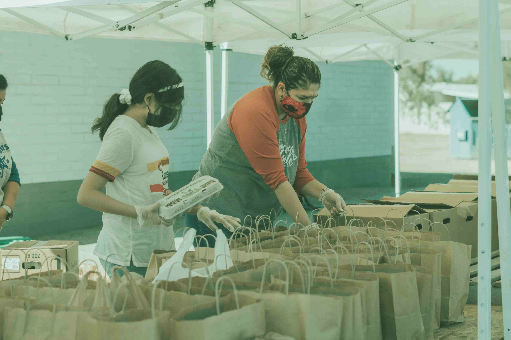

-
1988
Establishment
Established in 1988, the Comox Valley Lifeline Society started its mission to offer essential Lifeline services with compassion and dedication.
-
1996
Community Reach
Expanded services to communities including Cowichan Valley, Chemainus-Crofton, Sunshine Coast, Comox Valley, Campbell River, and North Vancouver Island.
-
2004
Empowering Independence:
Launched Lifeline Medical Alert Service, providing immediate assistance for older adults to live independently.
-
On The Go
Future Innovation
Evolving services from HomeSafe Basic to HomeSafe with Auto Alert, with an upcoming launch of the On The Go mobile medical alert system for enhanced safety.
Our Lifeline Journey Over the Years
The society, founded by the 'Lions of the North Island,' is a non-profit, charitable organization supported by dedicated volunteers and funded through installation fees, monthly monitoring fees, and generous donations.
Mission and Values
-
Non-Profit Organization
The Comox Valley Lifeline Society, a non-profit charitable organization founded in 1988 by the 'Lions of the North Island,' offers Lifeline services to individuals in need of 24/7 assistance. Their mission is to provide immediate help in emergency situations, allowing people the dignity to live independently.
-
Join Us in Building a Safer Community
Volunteers form the backbone of the Comox Valley Lifeline Society, playing a crucial role in the success of the program. Their dedication is evident in tasks such as equipment installations, service and maintenance calls, and promoting Lifeline Services. Thanks to their efforts, the Society is able to provide high-quality services at an affordable price.
- 
-
Donate for Lifeline - Your Support Matters
The Comox Valley Lifeline Society, a registered charitable organization, relies on install fees, monthly monitoring fees, and generous donations from individuals and service clubs to fund its services. If you're interested in supporting our goal of providing Lifeline service to those in need, consider making a donation. For more information, please contact the office using the provided phone number in your area.
- >
Subscribe to Our Event Notifications
Get event updates delivered straight to your inbox. Subscribe now!